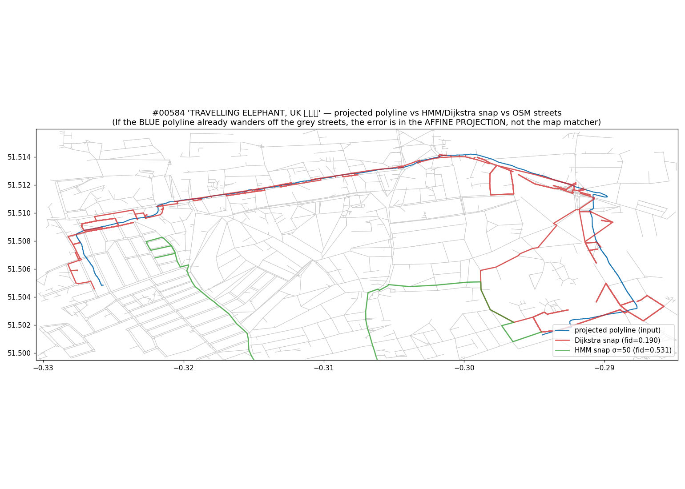

mapmatch_mode="dijkstra"; HMM is gated
behind --mapmatch-mode hmm for case-by-case refinement and future hybrid with
Stream B's per-street vias.
| Route | Mode | σ (m) | Fidelity | Δ vs baseline | Fréchet (m) | Buffered IoU | Confidence | Elapsed (s) |
|---|---|---|---|---|---|---|---|---|
| #584 Travelling Elephant | Dijkstra | — | 0.190 | — | 685 | 0.316 | 0.501 | 45 |
| #584 Travelling Elephant | HMM | 20 | 0.234 | +23% | 629 | 0.390 | 0.528 | 135 |
| #584 Travelling Elephant | HMM | 50 | 0.234 | +23% | 629 | 0.390 | 0.528 | 90 |
| #584 Travelling Elephant | HMM | 100 | 0.225 | +18% | 629 | 0.376 | 0.523 | 84 |
| #584 Travelling Elephant | HMM | 150 | 0.225 | +18% | 629 | 0.376 | 0.523 | 84 |
| #53 Regent's Park | Dijkstra | — | 0.359 | — | 134 | 0.379 | 0.578 | 43 |
| #53 Regent's Park | HMM | 20 | 0.238 | −34% | 196 | 0.385 | 0.522 | 358 |
| #53 Regent's Park | HMM | 50 | 0.230 | −36% | 196 | 0.372 | 0.517 | 615 |
| #53 Regent's Park | HMM | 100 | georef failed: only 4 unique GCPs (need ≥5) — sweep artefact, not HMM-specific | |||||
| #53 Regent's Park | HMM | 150 | georef failed: only 4 unique GCPs (need ≥5) — sweep artefact, not HMM-specific | |||||

HMM helps where Dijkstra's per-segment greediness is the dominant error mode (long, organic shapes like the elephant trunk). It hurts where Dijkstra's locally-greedy choices happen to coincide with the cartoon's grid-aligned intent (Regent's Park). The infrastructure is in tree behind --mapmatch-mode hmm; future work is a hybrid that also consumes Stream B's per-street via-node refinement, not a blanket switch.